일반기계기사 (2003-08-31 기출문제)
1과목: 재료역학
1. 원형 단면의 단면 2차모멘트 I와 극단면 2차모멘트 Jp의 관계를 올바르게 나타낸 것은?
- I = 2Jp
- I = Jp
- Jp = 2I
- Jp = 4I
(정답률: 40%)

2. 높이 h, 폭 b인 직사각형 단면을 가진 보와 높이 b, 폭h인 단면을 가진 보의 단면 2차 모멘트의 비는? (단, h = 1.5 b)
- 1.5:1
- 2.25:1
- 3.375:1
- 5.06:1
(정답률: 25%)
3. 길이가 ℓ 이고 단면적이 A인 봉의 상단은 고정되어 있고 하단에는 P의 하중이 작용하고 있을 때 자중이 W이고 탄성계수가 E라면 신장량을 구하는 식은?
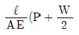
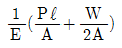
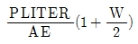
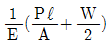
(정답률: 58%)
4. 다음과 같은 외팔보에서의 최대 처짐량은?
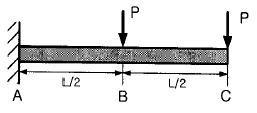
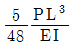
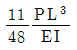
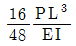
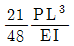
(정답률: 42%)
5. 그림과 같은 4각형 단면의 도심 G를 지나는 xc축, yc축, 밑변을 지나는 xb축, yb축에 대한 각각의 단면2차모멘트를 Ixc, Iyc, Ixb, Iyb 라고 할 때, 가장 큰 것은?
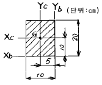
- Iyc
- Iyb
- Ixc
- Ixb
(정답률: 알수없음)
6. 변형율 성분이 εx=900x10-6, εy=-100x10-6, γxy=600x10-6 일 때 면내 최대 전단변형률의 값은?
- 400x10-6
- 583x10-6
- 983x10-6
- 1166x10-6
(정답률: 19%)
7. 안지름 400 mm , 내압 8 MPa 인 고압가스 용기의 뚜껑을 8개의 볼트로 같은 간격으로 조일때 각 볼트의 지름은 최소 몇 mm 로 해야 하는가? 단, 볼트의 허용인장응력은 45 MPa로 한다)
- 20
- 40
- 80
- 60
(정답률: 14%)
8. 그림의 단순지지보에서 중앙에 집중하중 P(=ωℓ)가 작용할 때와 등분포하중이 작용할 때 중앙에서 처짐 yA:yB의 값은?
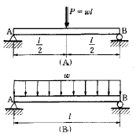
- 4 : 3
- 3 : 4
- 7 : 4
- 8 : 5
(정답률: 28%)
9. 길이가 같고 모양이 다른 두 개의 둥근 봉이 있다. 두 봉에 같은 하중 P가 작용할 때 봉 속에 저장되는 변형 에너지의 비의 값 (U2/U1)를 구하면? (단, 재료는 선형탄성거동을 한다고 가정한다.)
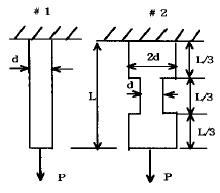
- 1/6
- 1/4
- 1/3
- 1/2
(정답률: 23%)
10. 그림과 같은 길이 3m의 양단 고정보가 그 중앙점에 집중하중 10kN을 받는다면 중앙점에서의 굽힘 응력은?
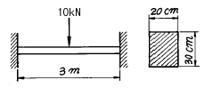
- 15.2 MPa
- 1.25 MPa
- 12.5 MPa
- 1.52 MPa
(정답률: 22%)
11. 단면치수에 비해 길이가 큰 길이 L 인 기둥 AB가 그림과 같이 한쪽 끝 A에서 고정되고, B의 도심에 작용하는 압축 하중 P를 받을 때 오일러식에 의한 임계하중(Pcr)은? (단, E는 탄성계수, I는 단면 2차 모멘트이다.)
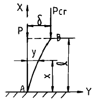
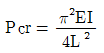
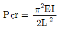
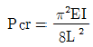
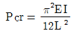
(정답률: 40%)
12. 같은 전단력이 작용할 때 원형단면보의 지름을 3배로 하면 최대 전단응력은 몇 배가 되는가?
- 9배
- 3배
- 1/3배
- 1/9배
(정답률: 28%)
13. 코일 스프링의 소선의 지름을 d, 코일의 평균지름을 D, 코일 전체의 길이가 L인 경우 인장하중 W를 작용시킬 때 전체의 처짐량을 나타내는 식은 어느 것인가? (단, G는 전단탄성계수이고, n은 코일의 감김수이다.)
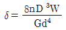
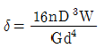
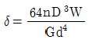
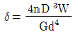
(정답률: 50%)
14. 그림과 같이 두가지 재료로 된 봉이 하중 P를 받으면서 강체로 된 보를 수평으로 유지시키고 있다. 강봉에 작용하는 응력이 150 MPa일 때 알루미늄봉에 작용하는 응력은 몇 MPa 인가? (단, 강과 알루미늄의 탄성계수의 비 Es/Ea = 3 이다.)
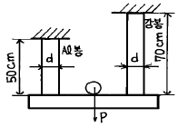
- 555
- 875
- 70
- 270
(정답률: 63%)
15. 강의 나사봉이 기온 27℃에서 24 MPa의 인장응력을 받고 있는 상태에서 고정하여 놓고 기온을 7℃로 하강시키면 발생하는 응력은 모두 몇 MPa 인가? (단, 재료의 탄성 계수 E = 210 GPa, 선팽창계수 α = 11.3x10-6 /℃이다.)
- 47.46
- 23.46
- 40.66
- 71.46
(정답률: 32%)
16. 길이 3m이고 지름이 16㎜인 원형단면봉에 30kN의 축하중을 작용시켰을 때 탄성신장량 2.2㎜가 생겼다. 이 재료의 탄성계수는 몇 GPa 인가?
- 2.03
- 203
- 1.36
- 136
(정답률: 41%)
17. 그림과 같이 반원부재에 하중 P가 작용할 때 지지점 B에서의 반력은?
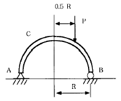
- P/4
- P/2
- 3P/4
- P
(정답률: 14%)
18. 수직응력에 의한 탄성에너지에 대한 설명 중 맞는 것은?
- 응력의 자승에 비례하고, 탄성계수에 반비례한다.
- 응력의 3승에 비례하고, 탄성계수에 비례한다.
- 응력에 비례하고, 탄성계수에도 비례한다.
- 응력에 반비례하고, 탄성계수에 비례한다.
(정답률: 40%)
19. 길이가 L인 단순보 AB 의 한 끝에 우력 M이 작용하고 있을 때 이 보의 A단에서의 기울기 읨A는?
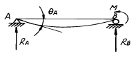
- ML/3EI
- ML/6EI
- ML2/2EI
- ML2/24EI
(정답률: 8%)
20. 그림과 같이 외팔보에 균일 분포 하중이 작용한다. 고정단에서의 굽힘 모멘트는 몇 N∙m 인가?
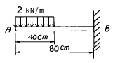
- 440
- 840
- 480
- 460
(정답률: 40%)
2과목: 기계열역학
21. 0.6 MPa, 200℃의 수증기가 50 m/s의 속도로 단열된 노즐로 들어가서 0.15 MPa의 포화수증기로 분사된다. 노즐 출구에서 수증기 속도는 얼마인가? (단, 노즐 입구 조건에서 수증기의 단위 질량당 내부에너지는 2638.9 kJ/kg, 엔탈피는 2850.1 kJ/kg이고, 출구 조건에서 수증기의 단위질량당 내부에너지는 2519.6 kJ/kg, 엔탈피는 2693.5kJ/kg 이다.)
- 53 m/s
- 49 m/s
- 562 m/s
- 591 m/s
(정답률: 27%)
22. 이상기체의 가역과정에서 등온과정의 전열량(Q)은?
- 0 이다.
- 무한대이다.
- 비유동과정의 일과 같다.
- 엔트로피 변화와 같다.
(정답률: 45%)
23. 열기관 중 카르노(Carnot)사이클은 어떠한 가역변화로 구성되며, 그 변화의 순서는?
- 등온팽창 - 단열팽창 - 등온압축 - 단열압축
- 등온팽창 - 단열압축 - 단열팽창 - 등온압축
- 등온팽창 - 등온압축 - 단열압축 - 단열팽창
- 등온팽창 - 단열팽창 - 단열압축 - 등온압축
(정답률: 25%)
24. 증기압축 냉동사이클을 구성하고 있는 다음의 기기들 중에서 냉매의 엔탈피가 거의 일정하게 유지되는 것은?
- 압축기
- 응축기
- 증발기
- 팽창밸브
(정답률: 28%)
25. 50℃에 있는 물 1 ㎏ 과 20℃에 있는 물 2 ㎏ 을 일정 압력하에서 단열혼합시켜 물의 온도가 30℃가 되었다. 물의 정압비열은 Cp = 4.2 kJ/kg.K로서 항상 일정하다고 할 때 이 혼합 과정의 전 엔트로피 변화는 몇 kJ/K 인가?
- 0.0282
- 0.0134
- -268.4
- 281.8
(정답률: 25%)
26. 다음 동력사이클에서 두 개의 정압과정이 포함된 사이클?
- Rankine
- Otto
- Diesel
- Carnot
(정답률: 8%)
27. 오토사이클에서 압축시작점의 상태가 0.1MPa, 40℃ 이고, 압축끝점의 온도와 최고온도는 각각 447℃와 3232K 이다. 이 사이클의 효율은?
- 43.5 %
- 56.5 %
- 77.7 %
- 91.1 %
(정답률: 7%)
28. 비열이 일정한 이상기계가 노즐 내를 등엔트로피 팽창할 때의 임계압력 PS를 옳게 나타낸 식은? (단, P1= 정체압력(stagnation pressure), k=비열비 이다.)
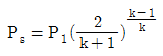
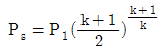
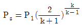
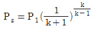
(정답률: 17%)
29. 전류 25A, 전압 13V를 가하여 축전지를 충전하고 있다. 충전하는 동안 축전지로부터 15W의 열손실이 있다. 축전지의 내부에너지는 어떤 비율로 변하는가?
- +310 J/s
- -310 J/s
- +340 J/s
- -340 J/s
(정답률: 30%)
30. 100℃의 수증기 10㎏이 100℃의 물로 응축 되었다. 수증기의 엔트로피 변화량은 몇 kJ/K인가? (단, 물의 잠열은 2257 kJ/kg 이다.)
- 14.5
- 5390
- -22570
- -60.5
(정답률: 48%)
31. 랭킨 사이클(Rankine cycle)에서 5 MPa, 500℃의 증기가 터빈 안에서 5 kPa 까지 단열팽창할 때 이 사이클의 펌프 일은 약 몇 kJ/kg 인가? (단, 물의 비체적은 0.001m3/㎏ 이다.)
- 50 kJ/kg
- 5 kJ/kg
- 10 kJ/kg
- 20 kJ/kg
(정답률: 25%)
32. 계가 비가역 사이클을 이룰 때 클라우지우스(Clausius)의 적분은?
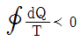
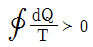
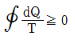
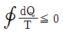
(정답률: 31%)
33. 저온 열원의 온도가 TL, 고온 열원의 온도가 TH인 두 열원 사이에서 작동하는 이상적인 냉동 사이클의 성능계수를 향상시키려면?
- TL을 올린다. 그리고 TH를 올린다.
- TL을 올린다. 그리고 TH를 내린다.
- TL을 내린다. 그리고 TH를 올린다.
- TL을 내린다. 그리고 TH를 내린다.
(정답률: 46%)
34. S + O2 → SO2 에서 반응물은?
- S나 O2또는 SO2 중의 하나를 말한다.
- S나 O2 및 SO2를 전부 말한다.
- S나 O2 를 말한다.
- SO2를 말한다.
(정답률: 42%)
35. 절대압력이 50 N/cm2 이고 온도가 135℃인 암모니아 가스의 비체적이 0.4m3/㎏ 이라면 암모니아의 기체상수 R은?
- 약 270 J/kg∙K
- 약 340 J/kg∙K
- 약 430 J/kg∙K
- 약 490 J/kg∙K
(정답률: 53%)
36. 산소 3kg과 질소 2kg이 혼합되어서 체적 2m3의 용기 내에 온도가 80℃의 상태로 있을 때, 용기 내의 압력은 다음 중 어느 것에 가장 가까운가? (단, 산소와 질소는 완전 기체로 취급하고 산소와 질소의 기체상수는 각각 0.2598 kJ/kg∙K, 0.2969 kJ/kg∙K이다.)
- 54.9 kPa
- 109.8 kPa
- 121.5 kPa
- 242.3 kPa
(정답률: 28%)
37. 천제연 폭포수의 높이가 55 m일 때 폭포수가 낙하한 후 수면에 도달할 때까지 주위와 열교환을 무시한다면 온도 상승은 몇 ℃인가? (단, 폭포수의 정압비열은 4.2 kJ/kg℃ 이다.)
- 0.87
- 0.31
- 0.13
- 0.78
(정답률: 25%)
38. 수증기를 이상기체로 볼 때 정압비열(kJ/kg∙K) 값은? (단, 수증기의 기체상수 = 0.462 kJ/kg∙K, 비열비 = 1.33이다.)
- 1.86
- 0.44
- 1.54
- 0.64
(정답률: 40%)
39. 열역학 제 1법칙은 다음의 어떤 과정에서 성립하는가?
- 가역과정에서만 성립한다.
- 비가역 과정에서만 성립한다.
- 가역 등온 과정에서만 성립한다.
- 가역이나 비가역 과정을 막론하고 성립한다.
(정답률: 16%)
40. 압력 1 N/cm2, 체적 0.5 m3 인 기체 1 kg을 가역적으로 압축하여 압력이 2 N/cm2, 체적이 0.3m3로 변화되었다. 이 과정이 압력 - 체적(P-V)선도에서 직선적으로 나타났다면 필요한 일의 양은?(오류 신고가 접수된 문제입니다. 반드시 정답과 해설을 확인하시기 바랍니다.)
- 2000 N∙m
- 3000 N∙m
- 4000 N∙m
- 5000 N∙m
(정답률: 20%)
3과목: 기계유체역학
41. 지름 20cm 인 구의 주위에 밀도가 1000kg/m3, 점성계수는 1.8x10-3 Pa.s 인 물이 2m/s의 속도로 흐르고 있다. 항력계수가 0.2인 경우 구에 작용하는 항력은 약 몇 N 인가?
- 12.6
- 200
- 0.2
- 25.12
(정답률: 23%)
42. 밑면이 1 m x 1 m, 높이가 0.5 m인 나무토막 위에 1960N의 추를 올려놓고 물에 띄웠다. 나무의 비중을 0.5 라할때 물속에 잠긴 부분의 부피는 몇 m3 인가?
- 0.5
- 0.45
- 0.25
- 0.⑤
(정답률: 34%)
43. 그림과 같은 수조에 1.0 m x 0.3 m 크기의 사각 수문을 통하여 유출되는 유량은 몇 m3/s 인가? (단 마찰손실은 무시하고 수조의 크기는 매우 크다고 가정하라.)
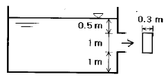
- 1.31
- 2.33
- 3.13
- 4.43
(정답률: 39%)
44. 그림과 같이 날카로운 사각 모서리 입출구를 갖는 관로에서 전수두 H는? (단, 관의 길이를 ℓ지름은 d, 관 마찰계수는 f, 속도수두는 V2/2g 이다.)
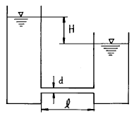
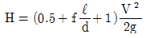
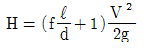
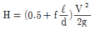
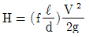
(정답률: 0%)
45. 관 마찰계수가 거의 상대조도(relative roughness)에만 의존하는 경우는?
- 층류유동
- 임계유동
- 천이유동
- 완전난류유동
(정답률: 30%)
46. 다음의 속도장 중에서 연속방정식을 만족시키는 유체의 흐름은 어느 것인가? (단, u 는 x 방향의 속도성분, v 는 y 방향의 속도성분)
- u = 2x2 - y2, v = -2 x y
- u = x2 - y2, v = -4 x y
- u = x2 - y2, v = 2 x y
- u = x2 - y2, v = -2 x y
(정답률: 31%)
47. 균일유동(uniform flow)이 원통을 지나 흘러갈 때의 유동에 대한 설명으로 옳지 않은 것은?
- 속도가 아주 느릴 때에는 상하류 유동이 대칭이다.
- 유속이 증가함에 따라, 원통의 정점을 지나면서 역압력기울기가 형성되고 유동의 박리(separation)가 생긴다.
- 유동의 박리점 뒤쪽에 형성된 후류(wake)에서는 바깥쪽에 비하여 압력이 낮고 속도도 느리다.
- 층류의 박리점이 난류의 박리점보다 더 뒤쪽에 있다.
(정답률: 25%)
48. 비중이 0.85이고 동점성계수가 3x10-4m2/s 인 기름이 직경 10 cm 원관내에 20 L/s으로 흐른다. 이 원관의 100 m 길이에서의 수두손실은?
- 16.6 m
- 24.9 m
- 49.8 m
- 82.1m
(정답률: 34%)
49. 유체를 연속체(continuum)로 보기가 어려운 경우는?
- 모세혈관 내 혈액
- 매우 높은 고도에서의 대기층
- 헬리콥터 날개 주위의 공기
- 자동차 라디에이터 내 냉각수
(정답률: 34%)
50. 웨버수가 나타내는 물리적 의미는?
- 관성력/중력
- 관성력/탄성력
- 관성력/표면장력
- 관성력/압력
(정답률: 29%)
51. 펌프에 의하여 흡입되는 물의 압력을 진공계로 측정하니 60 mmHg이었다. 이 때 절대압력은 몇 kPa인가? (단, 국소대기압은 750 mmHg, 수은의 비중은 13.6이다.)
- 92
- 100
- 108
- 8
(정답률: 22%)
52. 원관에서 어떤 유체의 속도가 2배가 되었을 때, 마찰계수가 1/√2 로 줄었다. 이때 압력 손실은 몇배가 되겠는가?
- 2 배
- 21/2 배
- 4 배
- 23/2 배
(정답률: 8%)
53. 그림과 같은 피토트관의 액주계 눈금이 h = 150 mm이고 관속의 유속이 6.09 m/s로 물이 흐르고 있다면 액주계 액체의 비중은 얼마인가?
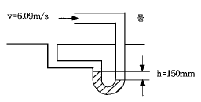
- 5.6
- 11.1
- 12.1
- 13.6
(정답률: 25%)
54. 원형실린더 주위의 유동에서 전방 정체점에서 θ=45°인 원주표면에서 공기의 유속은? (단, 공기는 이상유체로 보고 원주에서 멀리 떨어진 상류의 유속은 V이다.)
- V/2
- V/√2
- √2V
- 2V
(정답률: 12%)
55. 실린더 속에 액체가 흐르고 있다. 내벽에서 수직거리 y에서의 속도가 u = 5y - y2 [m/s]일 때 벽면에서의 마찰전단응력은 몇 N/m2 인가? (단, 액체의 점성계수는 0.0382 N.s/m2 이다.)
- 19.1
- 0.191
- 3.82
- 0.382
(정답률: 0%)
56. 밀도 ρ, 중력가속도 g, 유속 V, 힘 F에서 얻을 수 있는 무차원수는?(오류 신고가 접수된 문제입니다. 반드시 정답과 해설을 확인하시기 바랍니다.)
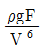
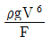
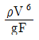
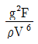
(정답률: 6%)
57. 지름이 각각 10 cm와 20 cm로 된 관이 서로 연결되어 있다. 비압축성 유동이라 가정하면 20 cm 관속의 평균유속이 2.4 m/s일 때 10 ㎝ 관내의 평균속도는 약 몇 m/s 인가?
- 0.96
- 9.6
- 0.7
- 7.2
(정답률: 16%)
58. 직경이 10cm 인 수평원관으로 3 km 떨어진 곳에 원유(점성계수 μ =0.02 Pa·s, 비중 s=0.86)를 0.2 m3/min의 유량으로 수송하기 위해서 필요한 동력은 몇 W 인가?
- 127
- 271
- 712
- 1270
(정답률: 28%)
59. 부피가 0.03m3 인 구가 그림과 같이 반쪽이 물에 잠겨있다. 이 때 구의 밀도는 몇 kg/m3 인가?
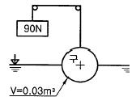
- 7900
- 806
- 224
- 9700
(정답률: 14%)
60. 유체의 체적 탄성계수는?
- 속도의 차원을 갖는다.
- 유체의 점성과 직접적인 관계가 있다.
- 온도의 차원을 갖는다.
- 압력의 차원을 갖는다.
(정답률: 38%)
4과목: 기계재료 및 유압기기
61. 다음 그림은 C = 0.35%, Mn = 0.37%를 함유한 망간강의 항온 변태 곡선이다. 이 그림에 나타난 a의 현미경 조직은 어느 것인가?
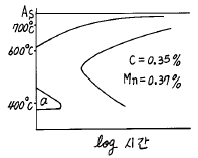
- 마텐자이트
- 베이나이트
- 오스테나이트
- 펄라이트
(정답률: 37%)
62. 다음 중 탄소공구강 및 일반공구강 재료로써 구비 조건이 아닌 것은?
- 상온 및 고온경도가 클 것
- 내마모성이 작을 것
- 가공 및 열처리성이 양호할 것
- 강인성 및 내충격성이 우수할 것
(정답률: 43%)
63. 특수강 중에서 자경강(self-hardening steel)이란 무엇인가?
- 담금질에 의해서 경화되는 강
- 뜨임에 의해서 경화되는 강
- 공냉정도로 경화되는 강
- 극히 서냉에 의해 경화되는 강
(정답률: 28%)
64. 강판 및 강관 제조를 위한 강괴에서 많이 볼수 있는 결함이 아닌 것은?
- 수축관(shrinkage pipe)
- 기포(blow hole)
- 백점(flakes)
- 균열(crack)
(정답률: 6%)
65. 보기와 같은 실린더의 피스톤에서 F=500㎏f의 힘이 발생 해야하면, 유압 P 은 약 몇 kgf/cm2 가 필요한가? (단, 실린더의 직경은 4㎝이다.)
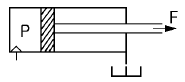
- 39.79
- 57.7
- 79.8
- 67.4
(정답률: 48%)
66. 어큐뮬레이터(accumulators)의 사용시 장점을 설명한 것으로 틀린 것은?
- 축적된 압력 에너지의 방출 및 맥동 사이클 시간을 연장한다.
- 실린더의 누유를 보충하는 보압회로 등에 사용한다.
- 충격적인 압력의 작용을 막는 완충용으로 활용한다.
- 배관의 손상을 막는 안전장치의 역할도 한다
(정답률: 29%)
67. 다음 작동유의 사용조건에 부적합한 것은?
- 필요하고도 충분한 유동성을 갖고 있을 것
- 거품이 적으며 압축성의 유체에 가까울 것
- 녹이나 부식의 발생을 방지할 것
- 실(seal)재료의 부식성이 없을 것
(정답률: 56%)
68. 다음 중 충격에는 약하나 압축강도는 크므로 공작기계의 베드, 프레임, 기계 구조물의 몸체 등에 가장 적합한 재질은?
- 합금공구강
- 탄소강
- 고속도강
- 주철
(정답률: 50%)
69. 다음 기구 중 오일의 점성을 가장 중요하게 이용한 기구에 해당되는 것은?
- 유압 잭
- 진동 흡수 댐퍼
- 베인 모터
- 유압 실린더
(정답률: 38%)
70. 보기의 유압 기호는 무슨 밸브인가?
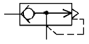
- 서보 밸브
- 급속 배기 밸브
- 파일럿 조작 체크 밸브
- 저압 우선형 셔틀 밸브
(정답률: 10%)
71. 미리 설정한 압력에 달하면 격막(膈膜)이 파괴되어 회로의 최고 압력을 한정시키는 것은?
- 감압 밸브
- 압력 스윗치
- 유체 퓨우즈
- 릴리프 밸브
(정답률: 30%)
72. 배빗메탈(Babbit metal)이란?
- Cu계 베어링 합금
- Pb계 베어링 합금
- Zn계 베어링 합금
- Sn계 베어링 합금
(정답률: 50%)
73. 금속재료를 석출경화시키기 위해서는 어떠한 예비처리가 가장 필요한가?
- 노멀라이징(normalizing)
- 파텐팅(patenting)
- 조질(thermal refining)
- 용체화 처리(solution treatment)
(정답률: 53%)
74. 다음 기호 중 전자방식으로 제어하는 것은?
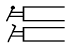
(정답률: 50%)
75. 다음 중 유압장치의 단점인 것은?
- 응답속도가 빠르다.
- 원격조작이 가능하다.
- 동작 속도를 자유로이 바꿀 수 있다.
- 동작유의 성질상 온도의 영향을 받기 쉽다.
(정답률: 50%)
76. 릴리프 밸브 등에서 회로 압력이 상승되어 포핏이 열리고 닫히는 동작이 연속적으로 반복되어 밸브시트를 두둘겨서 소음을 발생시키는 현상을 무엇이라 하는가?
- 컷인(cut-in)
- 점핑(jumping)
- 채터링(chattering)
- 디컴프레션(decompression)
(정답률: 48%)
77. 다음 탄소강 조직 중에서 경도가 가장 낮은 것은?
- 페라이트(Ferrite)
- 펄라이트(Pearlite)
- 마텐자이트(Martensite)
- 베이나이트(Bainite)
(정답률: 64%)
78. 탭, 다이스, 쇠톱날, 정 등의 용도인 탄소공구강 STC3종의 탄소함유량으로 가장 적당한 것은?
- 0.2 ~ 0.3%
- 0.45 ~ 0.6%
- 1.0 ~ 1.1%
- 1.8 ~ 2.3%
(정답률: 35%)
79. 백주철 주물을 고온도에서 장시간 풀림해서 시멘타이트를 분해 또는 소실시킴으로서 인성이나 연성을 증가시킨 주철은?
- 가단주철
- 칠드주철
- 고력합금주철
- 구상흑연주철
(정답률: 53%)
80. 유압회로에 대한 소음을 줄이기 위하여 주의하여야 할 사항으로 틀린 것은?
- 공동현상을 방지할 것
- 기름 댐퍼를 사용하지 말 것
- 펌프의 흡입압력에 제한을 둘 것
- 긴 관로의 변환밸브는 서서히 작동시킬 것
(정답률: 31%)
5과목: 기계제작법 및 기계동력학
81. 드릴의 홈을 따라서 나타나 있는 좁은 면으로, 드릴의 크기를 정하며 드릴의 위치를 잡아주는 것은?
- 탱(tang)
- 마진(margin)
- 섕크(shank)
- 윗면경사각(rake)
(정답률: 29%)
82. x=Xsin(ωt+ø )의 진동을 하고 있을 경우 맞는 것은?
- 진폭은 X이고 위상각이 ø 이며 고유진동수는 ωt의 진동이다.
- 진폭은 X/2이고 위상각이 ø 인 진동이다.
- 원진동수가 ω이며, 위상각이 ωt이다.
- 진폭이 X이고 원진동수가 ω인 진동이다.
(정답률: 42%)
83. 용접의 분류에서 아크 용접이 아닌 것은?
- MIG용접
- TIG 용접
- 테르밋 용접
- 스터드 용접
(정답률: 34%)
84. 다음 중 감쇠비(ζ)을 계산할 수 있는 방법은?
- 대수 감소율
- 고유 진동수
- 스프링 상수
- 주기
(정답률: 62%)
85. 강철표면에 규소를 확산 침투시키는 방법으로서 산류(酸類)에 대한 내부식성, 내마멸성이 큰 표면 경화법은?
- 실리코나이징 (siliconizing)
- 질화법
- 크로마이징 (chromizing)
- 청화법
(정답률: 42%)
86. 바이스(vice)의 크기는 어느 것으로 표시하는가?
- 바이스의 높이
- 바이스에 물릴수 있는 공작물의 최대 길이
- 바이스 죠(jaw)의 폭
- 바이스 죠(jaw)가 벌어질수 있는 최대 간격
(정답률: 32%)
87. 프레스 가공에서 전단가공에 해당되는 것은?
- 블랭킹
- 스피닝
- 시밍
- 비딩
(정답률: 56%)
88. 전동기(motor)가 회전축에 400 J의 토크로 3600 rpm으로 회전시킬 때, 전동기가 공급하는 동력은?
- 120.8kW
- 130.8kW
- 140.8kW
- 150.8kW
(정답률: 48%)
89. 길이 L, 질량 M인 일정단면의 가늘고 긴 봉에서 봉의 중심을 통과하는 봉에 수직인 직선에관한 관성모멘트는?
- 1/4ML2
- 1/6ML2
- 1/12ML2
- 1/24ML2
(정답률: 54%)
90. 그림과 같이 최초정지상태에 있는 바퀴에 줄이 감겨있다. 줄에 힘을 가하여 줄의 가속도가 a=4t m/s2 일 때 바퀴의 각속도를 시간의 함수로 나타내면?
- ω = 8t2 rad/s
- ω = 9t2 rad/s
- ω = 10t2 rad/s
- ω = 11t2 rad/s
(정답률: 24%)
91. 스프링으로 지지되어 있는 어느 물체가 매분 120회를 반복하면서 상하운동을 한다면 운동이 조화운동이라고 가정하였을 때 고유 진동수는 몇 rad/s 인가?(오류 신고가 접수된 문제입니다. 반드시 정답과 해설을 확인하시기 바랍니다.)
- 3.14
- 6.28
- 9.42
- 12.56
(정답률: 28%)
92. 그림과 같은 스프링-질량계(Spring-mass system)의 고유진동수는? (단, 스프링의 질량은 무시한다. k1, k2 : 스프링 상수)
(정답률: 54%)
93. 1자유도 진동 시스템의 운동 방정식이 로 나타내어지고 고유 진동수가 ωn으로 나타내어 질 때 임계 감쇠계수는?
- 2√mk
- 2√2mωn
(정답률: 45%)
94. 두께 2mm의 철판에 ø 20 ㎜의 구멍을 뚫을 때, 펀칭에 가하는 힘은 얼마인가? (단, 철판의 최대 전단응력은 45 kgf/mm2 임.)
- 약 4213 kgf
- 약 5655 kgf
- 약 1256 kgf
- 약 2786 kgf
(정답률: 알수없음)
95. 관성모멘트가 20 kg· m2 인 플라이휠(flywheel)을 정지 상태로부터 회전하기 시작하여 10초사이에 3600 rpm까지 일정 가속하기 위해 필요한 토크는 몇 N∙m 인가?
- 654
- 754
- 854
- 954
(정답률: 40%)
96. 평면상에서 운동하고 있는 로봇 팔의 끝단 P점의 위치를 극좌표계로 나타내면 다음과 같다. 거리 r(t)=2-sin(πt) 각 θ(t)=1-0.5cos(2πt), t=1 초에서의 P 점의 가속도의 크기로서 맞는 것은?
- π2
- 2π2
- 3π2
- 4π2
(정답률: 30%)
97. 목형의 조립 및 접합에서 합(合) 핀(pin)을 만들어서 접합(joint)시키는 조인트(butt joint)는?
- 벗 조인트(butt joint)
- 다우얼 조인트(dowel joint)
- 랩 조인트(lap joint)
- 더브테일 조인트(dovetail joint)
(정답률: 37%)
98. 다음은 지그나 고정구의 설계와 그 동작에 있어서 가장 중요한 영향을 가지는 인자 중 지그에 대하여만 적용되는 것은?
- 공작물의 조임
- 공구의 작용력에 대한 공작물 지지
- 칩에 대한 대책
- 공작물의 위치결정
(정답률: 19%)
99. 연삭에 관한 설명 중 옳은 것은?
- 초경공구의 거칠은 연삭에는 WA 입자가 쓰인다.
- 일반적으로 굳은 공작물에는 결합도가 높은 숫돌을, 무른 공작물에는 결합도가 낮은 숫돌을 사용한다.
- 연삭숫돌 바퀴의 속도가 증가하면 입자의 결합도는 높아진다.
- 입자의 연삭깊이는 연삭입자의 간격에 반비례한다.
(정답률: 12%)
100. 피삭체를 완전 소성체로 고려한 최대 전단응력설을 뒷받침하는 관계식을 다음 중에서 구하면? (단, ø :전단각, β :마찰각, α :상면경사각)
- ø = π -β +α
(정답률: 17%)
이유:
원형 단면의 경우, 극단면 2차모멘트 Jp는 단면 2차모멘트 I의 두 배가 된다. 이는 원형 단면이 극점에서 대칭이기 때문에, 극점을 중심으로 단면을 뒤집어도 단면의 형상이 변하지 않기 때문이다. 따라서, Jp = 2I가 성립한다.